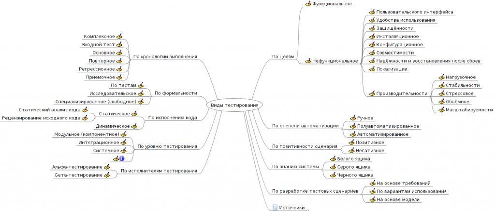
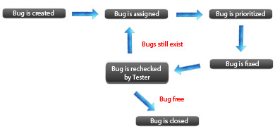
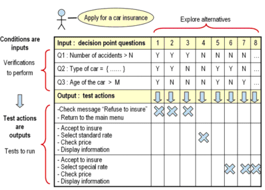
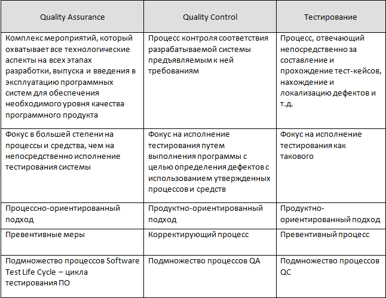
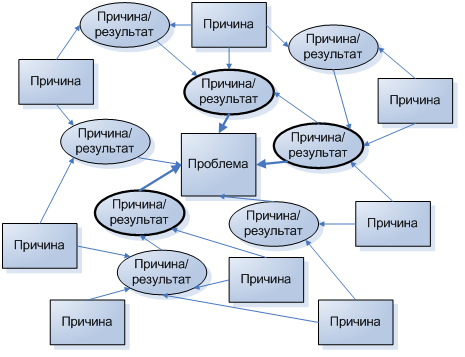

Хочу собрать всю самую необходимую теорию по тестирвоанию, которую спрашивают на собеседованиях у trainee, junior и немножко middle. Собственно, я собрал уже не мало. Цель сего поста в том, чтобы сообща добавить упущенное и исправить/перефразировать/добавить/сделатьЧтоТоЕщё с тем, что уже есть, чтобы стало хорошо и можно было взять всё это и повторить перед очередным собеседованием про всяк случай. Вообщем, коллеги, прошу под кат, кому почерпнуть что-то новое, кому систематизировать старое, а кому внести свою лепту.
В итоге должна получиться исчерпывающая шпаргалка, которую нужно перечитать по дороге на собеседование.
Всё ниже перечисленное не выдумано мной лично, а взято с разных источников, где мне лично формулировка и определение понравилось больше. В конце список источников.
В теме: определение тестирования, качество, верификация / валидация, цели, этапы, тест план, пункты тест плана, тест дизайн, техники тест дизайна, traceability matrix, tets case, чек-лист, дефект, error/deffect/failure, баг репорт, severity vs priority, уровни тестирования, виды / типы, подходы к интеграционному тестированию, принципы тестирования, статическое и динамическое тестирование, исследовательское / ad-hoc тестирование, требования, жизненный цикл бага, стадии разработки ПО, decision table, qa/qc/test engineer, диаграмма связей.
Поехали!
Тестирование программного обеспечения — проверка соответствия между реальным и ожидаемым поведением программы, осуществляемая на конечном наборе тестов, выбранном определенным образом. В более широком смысле, тестирование — это одна из техник контроля качества, включающая в себя активности по планированию работ (Test Management), проектированию тестов (Test Design), выполнению тестирования (Test Execution) и анализу полученных результатов (Test Analysis).
Качество программного обеспечения (Software Quality) — это совокупность характеристик программного обеспечения, относящихся к его способности удовлетворять установленные и предполагаемые потребности. [ISO 8402:1994 Quality management and quality assurance]
Верификация (verification) — это процесс оценки системы или её компонентов с целью определения удовлетворяют ли результаты текущего этапа разработки условиям, сформированным в начале этого этапа[IEEE]. Т.е. выполняются ли наши цели, сроки, задачи по разработке проекта, определенные в начале текущей фазы.
Валидация (validation) — это определение соответствия разрабатываемого ПО ожиданиям и потребностям пользователя, требованиям к системе [BS7925-1].
Также можно встретить иную интерпритацию:
Процесс оценки соответствия продукта явным требованиям (спецификациям) и есть верификация (verification), в то же время оценка соответствия продукта ожиданиям и требованиям пользователей — есть валидация (validation). Также часто можно встретить следующее определение этих понятий:
Validation — ’is this the right specification?’.
Verification — ’is the system correct to specification?’.
Цели тестирвоания
Повысить вероятность того, что приложение, предназначенное для тестирования, будет работать правильно при любых обстоятельствах.
Повысить вероятность того, что приложение, предназначенное для тестирования, будет соответствовать всем описанным требованиям.
Предоставление актуальной информации о состоянии продукта на данный момент.
Этапы тестирования:
1. Анализ
2. Разработка стратегии тестирования
и планирование процедур контроля качества
3. Работа с требованиями
4. Создание тестовой документации
5. Тестирование прототипа
6. Основное тестирование
7. Стабилизация
8. Эксплуатация
Тест план (Test Plan) — это документ, описывающий весь объем работ по тестированию, начиная с описания объекта, стратегии, расписания, критериев начала и окончания тестирования, до необходимого в процессе работы оборудования, специальных знаний, а также оценки рисков с вариантами их разрешения.
Отвечает на вопросы:
Что надо тестировать?
Что будете тестировать?
Как будете тестировать?
Когда будете тестировать?
Критерии начала тестирования.
Критерии окончания тестирования.
Основные пункты тест плана
В стандарте IEEE 829 перечислены пункты, из которых должен (пусть — может) состоять тест-план:
a) Test plan identifier;
b) Introduction;
c) Test items;
d) Features to be tested;
e) Features not to be tested;
f) Approach;
g) Item pass/fail criteria;
h) Suspension criteria and resumption requirements;
i) Test deliverables;
j) Testing tasks;
k) Environmental needs;
l) Responsibilities;
m) StafÞng and training needs;
n) Schedule;
o) Risks and contingencies;
p) Approvals.
Тест дизайн — это этап процесса тестирования ПО, на котором проектируются и создаются тестовые случаи (тест кейсы), в соответствии с определёнными ранее критериями качества и целями тестирования.
Роли, ответственные за тест дизайн:
• Тест аналитик — определяет «ЧТО тестировать?»
• Тест дизайнер — определяет «КАК тестировать?»
Техники тест дизайна
• Эквивалентное Разделение (Equivalence Partitioning — EP). Как пример, у вас есть диапазон допустимых значений от 1 до 10, вы должны выбрать одно верное значение внутри интервала, скажем, 5, и одно неверное значение вне интервала — 0.
• Анализ Граничных Значений (Boundary Value Analysis — BVA). Если взять пример выше, в качестве значений для позитивного тестирования выберем минимальную и максимальную границы (1 и 10), и значения больше и меньше границ (0 и 11). Анализ Граничный значений может быть применен к полям, записям, файлам, или к любого рода сущностям имеющим ограничения.
• Причина / Следствие (Cause/Effect — CE). Это, как правило, ввод комбинаций условий (причин), для получения ответа от системы (Следствие). Например, вы проверяете возможность добавлять клиента, используя определенную экранную форму. Для этого вам необходимо будет ввести несколько полей, таких как «Имя», «Адрес», «Номер Телефона» а затем, нажать кнопку «Добавить» — эта «Причина». После нажатия кнопки «Добавить», система добавляет клиента в базу данных и показывает его номер на экране — это «Следствие».
• Предугадывание ошибки (Error Guessing — EG). Это когда тест аналитик использует свои знания системы и способность к интерпретации спецификации на предмет того, чтобы «предугадать» при каких входных условиях система может выдать ошибку. Например, спецификация говорит: «пользователь должен ввести код». Тест аналитик, будет думать: «Что, если я не введу код?», «Что, если я введу неправильный код? », и так далее. Это и есть предугадывание ошибки.
• Исчерпывающее тестирование (Exhaustive Testing — ET) — это крайний случай. В пределах этой техники вы должны проверить все возможные комбинации входных значений, и в принципе, это должно найти все проблемы. На практике применение этого метода не представляется возможным, из-за огромного количества входных значений.
Traceability matrix — Матрица соответствия требований — это двумерная таблица, содержащая соответсвие функциональных требований (functional requirements) продукта и подготовленных тестовых сценариев (test cases). В заголовках колонок таблицы расположены требования, а в заголовках строк — тестовые сценарии. На пересечении — отметка, означающая, что требование текущей колонки покрыто тестовым сценарием текущей строки.
Матрица соответсвия требований используется QA-инженерами для валидации покрытия продукта тестами. МСТ является неотъемлемой частью тест-плана.
Тестовый случай (Test Case) — это артефакт, описывающий совокупность шагов, конкретных условий и параметров, необходимых для проверки реализации тестируемой функции или её части.
Пример:
Action Expected Result Test Result
(passed/failed/blocked)
Open page «login» Login page is opened Passed
Каждый тест кейс должен иметь 3 части:
PreConditions Список действий, которые приводят систему к состоянию пригодному для проведения основной проверки. Либо список условий, выполнение которых говорит о том, что система находится в пригодном для проведения основного теста состояния.
Test Case Description Список действий, переводящих систему из одного состояния в другое, для получения результата, на основании которого можно сделать вывод о удовлетворении реализации, поставленным требованиям
PostConditions Список действий, переводящих систему в первоначальное состояние (состояние до проведения теста — initial state)
Виды Тестовых Случаев:
Тест кейсы разделяются по ожидаемому результату на позитивные и негативные:
• Позитивный тест кейс использует только корректные данные и проверяет, что приложение правильно выполнило вызываемую функцию.
• Негативный тест кейс оперирует как корректными так и некорректными данными (минимум 1 некорректный параметр) и ставит целью проверку исключительных ситуаций (срабатывание валидаторов), а также проверяет, что вызываемая приложением функция не выполняется при срабатывании валидатора.
Чек-лист (check list) — это документ, описывающий что должно быть протестировано. При этом чек-лист может быть абсолютно разного уровня детализации. На сколько детальным будет чек-лист зависит от требований к отчетности, уровня знания продукта сотрудниками и сложности продукта.
Как правило, чек-лист содержит только действия (шаги), без ожидаемого результата. Чек-лист менее формализован чем тестовый сценарий. Его уместно использовать тогда, когда тестовые сценарии будут избыточны. Также чек-лист ассоциируются с гибкими подходами в тестировании.
Дефект (он же баг) — это несоответствие фактического результата выполнения программы ожидаемому результату. Дефекты обнаруживаются на этапе тестирования программного обеспечения (ПО), когда тестировщик проводит сравнение полученных результатов работы программы (компонента или дизайна) с ожидаемым результатом, описанным в спецификации требований.
Error — ошибка пользователя, то есть он пытается использовать программу иным способом.
Пример — вводит буквы в поля, где требуется вводить цифры (возраст, количество товара и т.п.).
В качественной программе предусмотрены такие ситуации и выдаются сообщение об ошибке (error message), с красным крестиком которые.
Bug (defect) — ошибка программиста (или дизайнера или ещё кого, кто принимает участие в разработке), то есть когда в программе, что-то идёт не так как планировалось и программа выходит из-под контроля. Например, когда никак не контроллируется ввод пользователя, в результате неверные данные вызывают краши или иные «радости» в работе программы. Либо внутри программа построена так, что изначально не соответствует тому, что от неё ожидается.
Failure — сбой (причём не обязательно аппаратный) в работе компонента, всей программы или системы. То есть, существуют такие дефекты, которые приводят к сбоям (A defect caused the failure) и существуют такие, которые не приводят. UI-дефекты например. Но аппаратный сбой, никак не связанный с software, тоже является failure.
Баг Репорт (Bug Report) — это документ, описывающий ситуацию или последовательность действий приведшую к некорректной работе объекта тестирования, с указанием причин и ожидаемого результата.
Шапка
Короткое описание (Summary) Короткое описание проблемы, явно указывающее на причину и тип ошибочной ситуации.
Проект (Project) Название тестируемого проекта
Компонент приложения (Component) Название части или функции тестируемого продукта
Номер версии (Version) Версия на которой была найдена ошибка
Серьезность (Severity) Наиболее распространена пятиуровневая система градации серьезности дефекта:
• S1 Блокирующий (Blocker)
• S2 Критический (Critical)
• S3 Значительный (Major)
• S4 Незначительный (Minor)
• S5 Тривиальный (Trivial)
Приоритет (Priority) Приоритет дефекта:
• P1 Высокий (High)
• P2 Средний (Medium)
• P3 Низкий (Low)
Статус (Status) Статус бага. Зависит от используемой процедуры и жизненного цикла бага (bug workflow and life cycle)
Автор (Author) Создатель баг репорта
Назначен на (Assigned To) Имя сотрудника, назначенного на решение проблемы
Окружение
ОС / Сервис Пак и т.д. / Браузера + версия /… Информация об окружении, на котором был найден баг: операционная система, сервис пак, для WEB тестирования — имя и версия браузера и т.д.
…
Описание
Шаги воспроизведения (Steps to Reproduce) Шаги, по которым можно легко воспроизвести ситуацию, приведшую к ошибке.
Фактический Результат (Result) Результат, полученный после прохождения шагов к воспроизведению
Ожидаемый результат (Expected Result) Ожидаемый правильный результат
Дополнения
Прикрепленный файл (Attachment) Файл с логами, скриншот или любой другой документ, который может помочь прояснить причину ошибки или указать на способ решения проблемы.
Severity vs Priority
Серьезность (Severity) — это атрибут, характеризующий влияние дефекта на работоспособность приложения.
Приоритет (Priority) — это атрибут, указывающий на очередность выполнения задачи или устранения дефекта. Можно сказать, что это инструмент менеджера по планированию работ. Чем выше приоритет, тем быстрее нужно исправить дефект.
Severity выставляется тестировщиком
Priority — менеджером, тимлидом или заказчиком
Градация Серьезности дефекта (Severity)
S1 Блокирующая (Blocker)
Блокирующая ошибка, приводящая приложение в нерабочее состояние, в результате которого дальнейшая работа с тестируемой системой или ее ключевыми функциями становится невозможна. Решение проблемы необходимо для дальнейшего функционирования системы.
S2 Критическая (Critical)
Критическая ошибка, неправильно работающая ключевая бизнес логика, дыра в системе безопасности, проблема, приведшая к временному падению сервера или приводящая в нерабочее состояние некоторую часть системы, без возможности решения проблемы, используя другие входные точки. Решение проблемы необходимо для дальнейшей работы с ключевыми функциями тестируемой системой.
S3 Значительная (Major)
Значительная ошибка, часть основной бизнес логики работает некорректно. Ошибка не критична или есть возможность для работы с тестируемой функцией, используя другие входные точки.
S4 Незначительная (Minor)
Незначительная ошибка, не нарушающая бизнес логику тестируемой части приложения, очевидная проблема пользовательского интерфейса.
S5 Тривиальная (Trivial)
Тривиальная ошибка, не касающаяся бизнес логики приложения, плохо воспроизводимая проблема, малозаметная посредствам пользовательского интерфейса, проблема сторонних библиотек или сервисов, проблема, не оказывающая никакого влияния на общее качество продукта.
Градация Приоритета дефекта (Priority)
P1 Высокий (High)
Ошибка должна быть исправлена как можно быстрее, т.к. ее наличие является критической для проекта.
P2 Средний (Medium)
Ошибка должна быть исправлена, ее наличие не является критичной, но требует обязательного решения.
P3 Низкий (Low)
Ошибка должна быть исправлена, ее наличие не является критичной, и не требует срочного решения.
Уровни Тестирования
1. Модульное тестирование (Unit Testing)
Компонентное (модульное) тестирование проверяет функциональность и ищет дефекты в частях приложения, которые доступны и могут быть протестированы по-отдельности (модули программ, объекты, классы, функции и т.д.).
2. Интеграционное тестирование (Integration Testing)
Проверяется взаимодействие между компонентами системы после проведения компонентного тестирования.
3. Системное тестирование (System Testing)
Основной задачей системного тестирования является проверка как функциональных, так и не функциональных требований в системе в целом. При этом выявляются дефекты, такие как неверное использование ресурсов системы, непредусмотренные комбинации данных пользовательского уровня, несовместимость с окружением, непредусмотренные сценарии использования, отсутствующая или неверная функциональность, неудобство использования и т.д.
4. Операционное тестирование (Release Testing).
Даже если система удовлетворяет всем требованиям, важно убедиться в том, что она удовлетворяет нуждам пользователя и выполняет свою роль в среде своей эксплуатации, как это было определено в бизнес моделе системы. Следует учесть, что и бизнес модель может содержать ошибки. Поэтому так важно провести операционное тестирование как финальный шаг валидации. Кроме этого, тестирование в среде эксплуатации позволяет выявить и нефункциональные проблемы, такие как: конфликт с другими системами, смежными в области бизнеса или в программных и электронных окружениях; недостаточная производительность системы в среде эксплуатации и др. Очевидно, что нахождение подобных вещей на стадии внедрения — критичная и дорогостоящая проблема. Поэтому так важно проведение не только верификации, но и валидации, с самых ранних этапов разработки ПО.
5. Приемочное тестирование (Acceptance Testing)
Формальный процесс тестирования, который проверяет соответствие системы требованиям и проводится с целью:
• определения удовлетворяет ли система приемочным критериям;
• вынесения решения заказчиком или другим уполномоченным лицом принимается приложение или нет.
Виды / типы тестирования
Функциональные виды тестирования
• Функциональное тестирование (Functional testing)
• Тестирование безопасности (Security and Access Control Testing)
• Тестирование взаимодействия (Interoperability Testing)
Нефункциональные виды тестирования
• Все виды тестирования производительности:
o нагрузочное тестирование (Performance and Load Testing)
o стрессовое тестирование (Stress Testing)
o тестирование стабильности или надежности (Stability / Reliability Testing)
o объемное тестирование (Volume Testing)
• Тестирование установки (Installation testing)
• Тестирование удобства пользования (Usability Testing)
• Тестирование на отказ и восстановление (Failover and Recovery Testing)
• Конфигурационное тестирование (Configuration Testing)
Связанные с изменениями виды тестирования
• Дымовое тестирование (Smoke Testing)
• Регрессионное тестирование (Regression Testing)
• Повторное тестирование (Re-testing)
• Тестирование сборки (Build Verification Test)
• Санитарное тестирование или проверка согласованности/исправности (Sanity Testing)
Функциональное тестирование рассматривает заранее указанное поведение и основывается на анализе спецификаций функциональности компонента или системы в целом.
Тестирование безопасности — это стратегия тестирования, используемая для проверки безопасности системы, а также для анализа рисков, связанных с обеспечением целостного подхода к защите приложения, атак хакеров, вирусов, несанкционированного доступа к конфиденциальным данным.
Тестирование взаимодействия (Interoperability Testing) — это функциональное тестирование, проверяющее способность приложения взаимодействовать с одним и более компонентами или системами и включающее в себя тестирование совместимости (compatibility testing) и интеграционное тестирование
Нагрузочное тестирование — это автоматизированное тестирование, имитирующее работу определенного количества бизнес пользователей на каком-либо общем (разделяемом ими) ресурсе.
Стрессовое тестирование (Stress Testing) позволяет проверить насколько приложение и система в целом работоспособны в условиях стресса и также оценить способность системы к регенерации, т.е. к возвращению к нормальному состоянию после прекращения воздействия стресса. Стрессом в данном контексте может быть повышение интенсивности выполнения операций до очень высоких значений или аварийное изменение конфигурации сервера. Также одной из задач при стрессовом тестировании может быть оценка деградации производительности, таким образом цели стрессового тестирования могут пересекаться с целями тестирования производительности.
Объемное тестирование (Volume Testing). Задачей объемного тестирования является получение оценки производительности при увеличении объемов данных в базе данных приложения
Тестирование стабильности или надежности (Stability / Reliability Testing). Задачей тестирования стабильности (надежности) является проверка работоспособности приложения при длительном (многочасовом) тестировании со средним уровнем нагрузки.
Тестирование установки направленно на проверку успешной инсталляции и настройки, а также обновления или удаления программного обеспечения.
Тестирование удобства пользования — это метод тестирования, направленный на установление степени удобства использования, обучаемости, понятности и привлекательности для пользователей разрабатываемого продукта в контексте заданных условий. Сюда также входит:
Тестирование пользовательского интерфейса (англ. UI Testing) — это вид тестирования исследования, выполняемого с целью определения, удобен ли некоторый искусственный объект (такой как веб-страница, пользовательский интерфейс или устройство) для его предполагаемого применения.
User eXperience (UX) — ощущение, испытываемое пользователем во время использования цифрового продукта, в то время как User interface — это инструмент, позволяющий осуществлять интеракцию «пользователь — веб-ресурс».
Тестирование на отказ и восстановление (Failover and Recovery Testing) проверяет тестируемый продукт с точки зрения способности противостоять и успешно восстанавливаться после возможных сбоев, возникших в связи с ошибками программного обеспечения, отказами оборудования или проблемами связи (например, отказ сети). Целью данного вида тестирования является проверка систем восстановления (или дублирующих основной функционал систем), которые, в случае возникновения сбоев, обеспечат сохранность и целостность данных тестируемого продукта.
Конфигурационное тестирование (Configuration Testing) — специальный вид тестирования, направленный на проверку работы программного обеспечения при различных конфигурациях системы (заявленных платформах, поддерживаемых драйверах, при различных конфигурациях компьютеров и т.д.)
Дымовое (Smoke) тестирование рассматривается как короткий цикл тестов, выполняемый для подтверждения того, что после сборки кода (нового или исправленного) устанавливаемое приложение, стартует и выполняет основные функции.
Регрессионное тестирование — это вид тестирования направленный на проверку изменений, сделанных в приложении или окружающей среде (починка дефекта, слияние кода, миграция на другую операционную систему, базу данных, веб сервер или сервер приложения), для подтверждения того факта, что существующая ранее функциональность работает как и прежде. Регрессионными могут быть как функциональные, так и нефункциональные тесты.
Повторное тестирование — тестирование, во время которого исполняются тестовые сценарии, выявившие ошибки во время последнего запуска, для подтверждения успешности исправления этих ошибок.
В чем разница между regression testing и re-testing?
Re-testing — проверяется исправление багов
Regression testing — проверяется то, что исправление багов не повлияло на другие модули ПО и не вызвало новых багов.
Тестирование сборки или Build Verification Test — тестирование направленное на определение соответствия, выпущенной версии, критериям качества для начала тестирования. По своим целям является аналогом Дымового Тестирования, направленного на приемку новой версии в дальнейшее тестирование или эксплуатацию. Вглубь оно может проникать дальше, в зависимости от требований к качеству выпущенной версии.
Санитарное тестирование — это узконаправленное тестирование достаточное для доказательства того, что конкретная функция работает согласно заявленным в спецификации требованиям. Является подмножеством регрессионного тестирования. Используется для определения работоспособности определенной части приложения после изменений произведенных в ней или окружающей среде. Обычно выполняется вручную.
Предугадывание ошибки (Error Guessing — EG). Это когда тест аналитик использует свои знания системы и способность к интерпретации спецификации на предмет того, чтобы «предугадать» при каких входных условиях система может выдать ошибку. Например, спецификация говорит: «пользователь должен ввести код». Тест аналитик, будет думать: «Что, если я не введу код?», «Что, если я введу неправильный код? », и так далее. Это и есть предугадывание ошибки.

Подходы к интеграционному тестированию:
• Снизу вверх (Bottom Up Integration)
Все низкоуровневые модули, процедуры или функции собираются воедино и затем тестируются. После чего собирается следующий уровень модулей для проведения интеграционного тестирования. Данный подход считается полезным, если все или практически все модули, разрабатываемого уровня, готовы. Также данный подход помогает определить по результатам тестирования уровень готовности приложения.
• Сверху вниз (Top Down Integration)
Вначале тестируются все высокоуровневые модули, и постепенно один за другим добавляются низкоуровневые. Все модули более низкого уровня симулируются заглушками с аналогичной функциональностью, затем по мере готовности они заменяются реальными активными компонентами. Таким образом мы проводим тестирование сверху вниз.
• Большой взрыв («Big Bang» Integration)
Все или практически все разработанные модули собираются вместе в виде законченной системы или ее основной части, и затем проводится интеграционное тестирование. Такой подход очень хорош для сохранения времени. Однако если тест кейсы и их результаты записаны не верно, то сам процесс интеграции сильно осложнится, что станет преградой для команды тестирования при достижении основной цели интеграционного тестирования.
Принципы тестирования
Принцип 1 — Тестирование демонстрирует наличие дефектов (Testing shows presence of defects)
Тестирование может показать, что дефекты присутствуют, но не может доказать, что их нет. Тестирование снижает вероятность наличия дефектов, находящихся в программном обеспечении, но, даже если дефекты не были обнаружены, это не доказывает его корректности.
Принцип 2 — Исчерпывающее тестирование недостижимо (Exhaustive testing is impossible)
Полное тестирование с использованием всех комбинаций вводов и предусловий физически невыполнимо, за исключением тривиальных случаев. Вместо исчерпывающего тестирования должны использоваться анализ рисков и расстановка приоритетов, чтобы более точно сфокусировать усилия по тестированию.
Принцип 3 — Раннее тестирование (Early testing)
Чтобы найти дефекты как можно раньше, активности по тестированию должны быть начаты как можно раньше в жизненном цикле разработки программного обеспечения или системы, и должны быть сфокусированы на определенных целях.
Принцип 4 — Скопление дефектов (Defects clustering)
Усилия тестирования должны быть сосредоточены пропорционально ожидаемой, а позже реальной плотности дефектов по модулям. Как правило, большая часть дефектов, обнаруженных при тестировании или повлекших за собой основное количество сбоев системы, содержится в небольшом количестве модулей.
Принцип 5 — Парадокс пестицида (Pesticide paradox)
Если одни и те же тесты будут прогоняться много раз, в конечном счете этот набор тестовых сценариев больше не будет находить новых дефектов. Чтобы преодолеть этот «парадокс пестицида», тестовые сценарии должны регулярно рецензироваться и корректироваться, новые тесты должны быть разносторонними, чтобы охватить все компоненты программного обеспечения, или системы, и найти как можно больше дефектов.
Принцип 6 — Тестирование зависит от контекста (Testing is concept depending)
Тестирование выполняется по-разному в зависимости от контекста. Например, программное обеспечение, в котором критически важна безопасность, тестируется иначе, чем сайт электронной коммерции.
Принцип 7 — Заблуждение об отсутствии ошибок (Absence-of-errors fallacy)
Обнаружение и исправление дефектов не помогут, если созданная система не подходит пользователю и не удовлетворяет его ожиданиям и потребностям.
Cтатическое и динамическое тестирование
Статическое тестирование отличается от динамического тем, что производится без запуска программного кода продукта. Тестирование осуществляется путем анализа программного кода (code review) или скомпилированного кода. Анализ может производиться как вручную, так и с помощью специальных инструментальных средств. Целью анализа является раннее выявление ошибок и потенциальных проблем в продукте. Также к статическому тестирвоанию относится тестирования спецификации и прочей документации.
Исследовательское / ad-hoc тестирование
Простейшее определение исследовательского тестирования — это разработка и выполнения тестов в одно и то же время. Что является противоположностью сценарного подхода (с его предопределенными процедурами тестирования, неважно ручными или автоматизированными). Исследовательские тесты, в отличие от сценарных тестов, не определены заранее и не выполняются в точном соответствии с планом.
Разница между ad hoc и exploratory testing в том, что теоретически, ad hoc может провести кто угодно, а для проведения exploratory необходимо мастерство и владение определенными техниками. Обратите внимание, что определенные техники это не только техники тестирования.
Требования — это спецификация (описание) того, что должно быть реализовано.
Требования описывают то, что необходимо реализовать, без детализации технической стороны решения. Что, а не как.
Требования к требованиям:
• Корректность
• Недвусмысленность
• Полнота набора требований
• Непротиворечивость набора требований
• Проверяемость (тестопригодность)
• Трассируемость
• Понимаемость
Жизненный цикл бага

Стадии разработки ПО — это этапы, которые проходят команды разработчиков ПО, прежде чем программа станет доступной для широко круга пользователей. Разработка ПО начинается с первоначального этапа разработки (стадия «пре-альфа») и продолжается стадиями, на которых продукт дорабатывается и модернизируется. Финальным этапом этого процесса становится выпуск на рынок окончательной версии программного обеспечения («общедоступного релиза»).
Программный продукт проходит следующие стадии:
• анализ требований к проекту;
• проектирование;
• реализация;
• тестирование продукта;
• внедрение и поддержка.
Каждой стадии разработки ПО присваивается определенный порядковый номер. Также каждый этап имеет свое собственное название, которое характеризует готовность продукта на этой стадии.
Жизненный цикл разработки ПО:
• Пре-альфа
• Альфа
• Бета
• Релиз-кандидат
• Релиз
• Пост-релиз
Таблица принятия решений (decision table) — великолепный инструмент для упорядочения сложных бизнес требований, которые должны быть реализованы в продукте. В таблицах решений представлен набор условий, одновременное выполнение которых должно привести к определенному действию.

QA/QC/Test Engineer

Таким образом, мы можем построить модель иерархии процессов обеспечения качества: Тестирование — часть QC. QC — часть QA.
Диаграмма связей — это инструмент управления качеством, основанный на определении логических взаимосвязей между различными данными. Применяется этот инструмент для сопоставления причин и следствий по исследуемой проблеме.

Источники: www.protesting.ru, www.bugscatcher.net, www.qalight.com.ua, www.thinkingintests.wordpress.com, книга ISTQB, www.quizful.net, www.bugsclock.blogspot.com, www.zeelabs.com, www.devopswiki.net, www.hvorostovoz.blogspot.com.